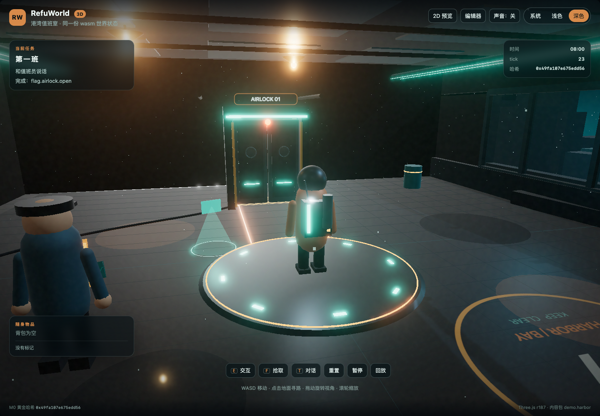
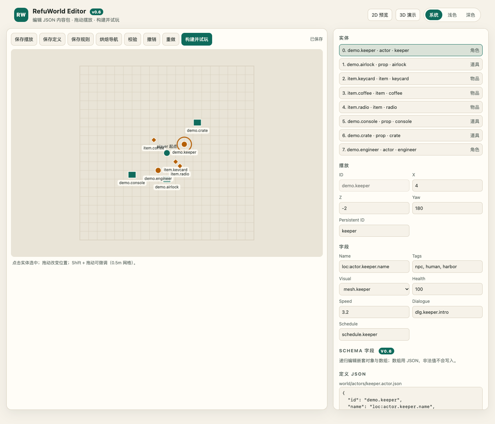
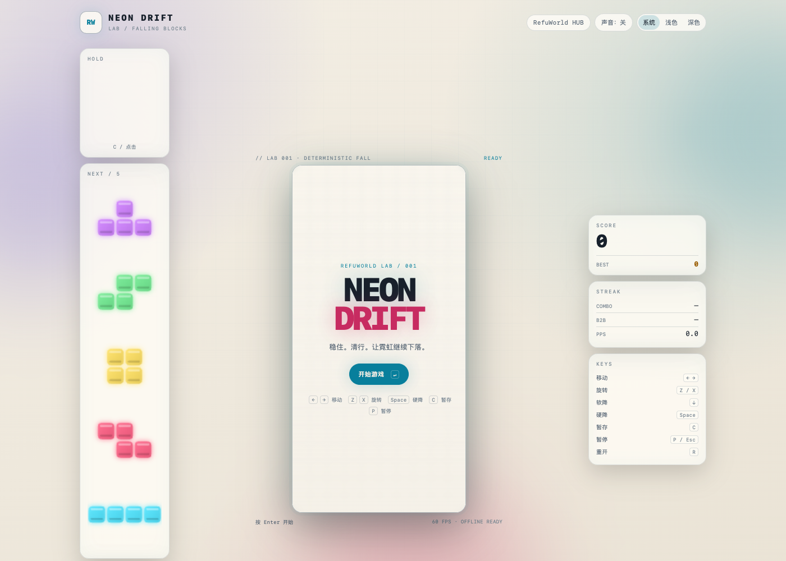
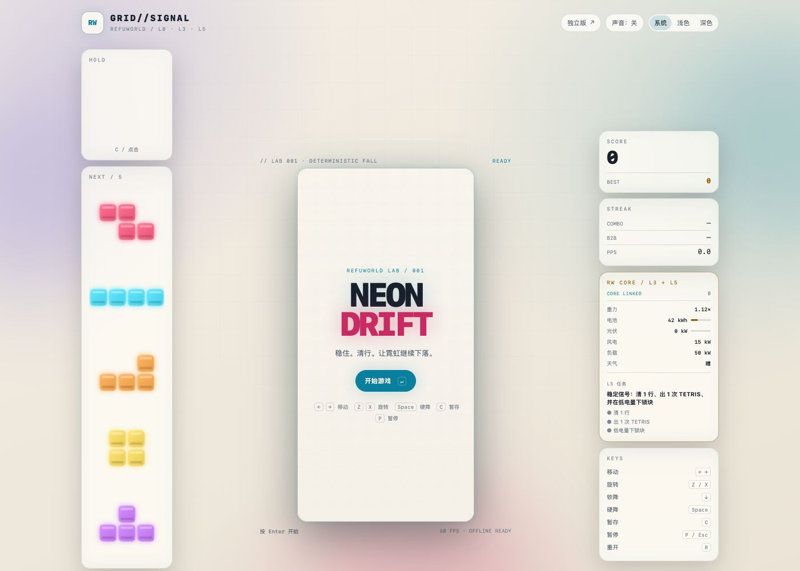
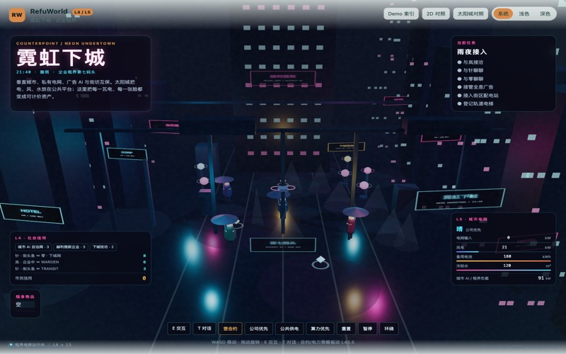

把「世界怎么运转」从引擎里拿出来
RefuWorld 是一个跨游戏、跨引擎的世界系统中间层：Rust 权威内核负责确定性规则、空间、时间与存档；TypeScript/JSON 内容包描述世界；引擎适配器只负责输入、画面、声音和资产。它不是另一个引擎，而是引擎与游戏内容之间的一层。

确定性哈希C ABITS DSL编辑器3D 预览L4 社会L5 系统EntityStore
四件“成功”而不是四张架构图
项目地形图
到哪了：M0 → M1 → M2 → L4/L5
这里只记录**已经跑过**的事。内核已从单体 World 拆成 L0–L5 与 EntityStore；M2 Godot 适配器、L4 社会关系、L5 世界系统和 25 个 Demo 都已有本地/CI 证据。
- M0 · 可运行内核 2026-11-23 · 8 crates、C ABI、QuickJS spike、坏包 fixture、600 tick 双跑。
- M1 · TS DSL + Web 预览 TS 包与 JSON 包同哈希；2D 预览回放
0x3606a2…。 - M1 · 编辑器 v0.6 布局拖拽、字段表单、对话图、撤销/重做、保存校验回滚、构建试玩。
- M1 · 移动/导航/资产 WASD + 点击寻路；40×40 烘焙网格；逻辑资产依赖与 C ABI
world_zone_assets。 - M1 · 3D 演示 Three.js r187 本地 vendor；同一 wasm 状态；气闸/对话/雨海灯塔。
- M1 · ScriptHost QuickJS 事件 → 命令；每脚本持久状态随快照；100ms 墙钟/中断/内存/栈/命令预算；wasm/C/CLI/headless 注入。
- M1 · 三平台 CI GitHub Actions run 45757232197：Ubuntu / macOS / Windows、C ABI、real5k、world-wasm + QuickJS、8 页 web 检查全绿。
- M2 · Godot 逻辑适配器 world-abi + GDExtension WorldNode；600 tick 哈希、save/load、BoxMesh 视图池、WASD/相机/灯光、kind 视图、GLB scene 池、真实 WAV；CTS L/T/I/E/V/S/X/D/Z/A/U 已过；事件/存档互通；5k 帧时间已采集。
- L0–L3 · 内核分层 时空物理 / 主体交互 / 行为能动 / 叙事规则；单向依赖、边界门、黄金哈希与事件序列保持。
- EntityStore · 组件列 SoA 列存储 + EntityView/EntityMut；Entity 只作为 Snapshot/C ABI DTO；spawn/despawn 保留代际。
- L4 · 社会关系 factions / relationships / reputation；talk 自动记录，SocialAction 支持大会提案；旧包不序列化。
- L5 · 世界系统 天气、光伏、风电、储能、水循环、AI 负载；energy_updated / weather_changed 与 SetSystemPolicy。
- 现在 · 25 Demo + L4/L5 太阳城农场与霓虹下城作为正反旗舰；CI 已全绿；5k p50 0.129 ms，p95 0.17–0.19 ms。
- 下一步 · 作者试用/内容 真实作者 2 小时试用与更多内容量。
可复现的证据
| 证据 | 结果 | 来源 |
|---|---|---|
| Rust workspace 测试 | 19 个通过；clippy 干净 | cargo test --workspace |
| 内容测试 | 25 条 PASS：港湾 4 + 夜市/温室/环形站各 1 + 10 个 2D 场景 + 太阳城农场 + 霓虹下城 + L0 时空沙盒 + L1 交互室 + L2 行为实验室 + L3 叙事实验室 + L4 社会关系室 + L5 系统控制室 | worldc content-test |
| 黄金回放 | 0x3606a221e9990561（Headless / C ABI / wasm） | run_m0.sh / run_m1.sh |
| TS 包一致性 | 包哈希 sha256:21569377…b7d5f9，与 JSON 包一致 | worldc ts-build --compare |
| 5k 真实基准 | Apple M1 Pro release：5,000 初始实体，tick P50 0.129 ms、P95 0.17–0.19 ms，snapshot P95 ≈3.4 ms | worldc bench --scenario real5k |
| 主题与页面 | R-016 八页：2D / 编辑器 / 3D 港湾 / 2.5D / 3D 环形站 / HUB / GUIDE / Gallery 通过 | check_html_theme.ts |
| 3D 静态契约 | 本地 Three.js、import map、wasm 交互入口、无 CDN | test/demo3d_static.mjs |
怎么复跑
cd games/world
npm install
./test/run_m0.sh # 内核 / C ABI / 坏包 / QuickJS / 基准
./test/run_m1.sh # TS DSL / 内容 / 编辑器 / 3D / 5k real / wasm
./web/build.sh # 2D + 3D 静态构建
node tools/serve-web.mjs --port 8787
# 2D: http://127.0.0.1:8787/web/
# 3D: http://127.0.0.1:8787/web/demo3d.html分层内核 + 宿主边界：核心从不回调引擎
内容包是唯一事实源；内核从时空物理 L0 逐层叠到世界系统 L5；宿主通过版本化 C ABI 轮询状态、提交命令。引擎适配器只做“表现与输入”，不拥有规则。
world-core；L0 时空物理提供时间/空间/碰撞，L1 主体交互、L2 行为、L3 叙事逐层叠加，L4 社会关系与 L5 世界系统可选启用；经 world-ffi 的 C ABI 给宿主消费。宿主只做输入、视图、音频与资产，不拥有规则。world_poll_events / world_copy_transforms 拉取状态，通过命令入口提交输入。一次 tick 的路径
- 输入 → 命令宿主把移动/交互/拾取/大会/能源策略转成
Command，进入确定性队列。 - L0 · 时空物理固定步进、时钟、Transform、路径跟随、碰撞、Zone 边界与 A*；只接收轻量 Body 视图。
- L1 · 主体交互Interact / Talk / Pickup / OpenDoor / GiveItem；背包、门锁、物品转移在独立列上完成。
- L2 · 行为/能动日程与 behavior 变化；复用缓冲计算，不拥有任务与对话。
- L3 · 叙事/规则flags / quests / dialogue / rules / ScriptHost；只通过命令与事件影响下层。
- L4/L5 · 可选层L4 阵营/关系/声望；L5 天气/能源/水/AI 负载；旧包不序列化，保持 v1 哈希。
- 状态哈希Snapshot v1 DTO → xxh3；用于回放、跨宿主对账、存档校验。
- 表现同步宿主轮询事件与 transform；引擎只做插值、特效、音频。
Crates
| Crate | 职责 | 不做什么 |
|---|---|---|
world-pack | schema 读取、校验、哈希、导航烘焙输入 | 不跑世界 |
world-core | L0–L5、EntityStore、tick、碰撞/A*、快照与存档 | 不依赖引擎；不渲染 |
world-abi | 安全 Rust ABI 封装、适配器共用 | 不依赖具体引擎 |
world-ffi | C ABI v0、句柄、缓冲、错误码 | 不写玩法 |
world-host-headless | CI / 回放 / 无头宿主 | 不渲染 |
world-cli | validate/build/test/editor/bake/bench/content-test | 不成为运行时依赖 |
world-script / -wasm | QuickJS ScriptHost：ES module + 循环诊断、async/跨 tick delay、tick timer、持久状态、热重载 | 墙钟 setTimeout 映射为 tick；函数回调不跨 reload |
world-wasm | 作者预览门面（2D/3D 共用） | 不直接走 C ABI |
完整 ABI 与适配器契约见 03 · 引擎适配与替换，决策见 ADR-004。
实现：从输入到哈希，再到宿主
这一页不是 API 目录，而是一条可以跟着走的实现路径：命令怎样进入 L0–L5、EntityStore 怎样组织组件、快照怎样变成哈希、L4/L5 怎样按需叠加、C ABI 怎样把状态交给引擎。每一段都给出源码入口，方便人类研究者按需跳读。
1. 一次 tick：固定步进，不回调引擎
let mut world = World::from_pack(&pack, pack.hash()?)?;
for tick in 1..=600 {
for step in trace.steps_at(tick) {
world.queue_command(step.command.resolve(&world)?);
}
world.tick_once(); // 固定步进
}
let hash = world.state_hash(); // 规范化快照 → xxh3源码入口：world-core/src/world.rs 的 queue_command、tick_once、snapshot；回放与双跑在 runner.rs。
2. 数据模型：EntityStore 组件列 + Snapshot v1 DTO
EntityStore · 列
core / transform / collider / speed / inventory / interactable / door / schedule / behavior / dialogue 分列；EntityView / EntityMut 提供扁平读写。
EntityId(index, generation) 仍是回放、存档与视图池的共同键。
Snapshot · v1
Entity 只作为快照/C ABI DTO；字段顺序固定。L4/L5 的 social / systems 是可选字段，旧包不序列化。
serde_json → xxh3_64，旧包黄金哈希不变。
3. L4/L5：社会关系与世界系统
L4 · 社会
factions / relationships / reputation；talk 自动记录信任与互动次数，SocialAction 支持大会提案/支持。只依赖 L1/L2 的事实，不拥有空间。
太阳城：3 人类 + 3 公共 AI；霓虹下城：企业/街坊/城市 AI。
L5 · 系统
天气循环、光伏、风电、储能、水循环、AI 负载；每 60 tick energy_updated，每 600 tick weather_changed。策略 balance / irrigate / compute / profit / commons。
旧包没有 systems 定义时完全跳过；不增加事件或哈希。
{"op":"social_action","actor":player,"target":mayor,"action":"propose"}
{"op":"set_system_policy","policy":"commons"}
源码入口：layers/social.rs、layers/systems.rs；迁移记录见 11 · 内核分层与迁移。
4. C ABI：调用方持有缓冲，核心不回调
适配器只看到 WorldHandle* 和值类型。读数据分两次调用：先问长度，再传自己的缓冲区；写命令传 JSON 或结构化参数。所有 extern "C" 入口用 catch_unwind 隔离 panic，错误通过 world_last_error 返回。
读：轮询而非回调
world_tick(handle, 16666);
size_t n = world_copy_transforms(handle, buf, cap);
uint8_t ev[4096]; size_t ev_len;
world_poll_events(handle, ev, sizeof ev, &ev_len);写：命令入口
{"op":"interact",
"actor":{"index":0,"generation":1},
"target":{"index":3,"generation":1}}
命令先入队，tick 时统一校验；非法命令不会写半状态。
源码入口：world-ffi/src/lib.rs；契约在 world.h 与 ADR-004。
5. 内容到预览：两套写法，一个哈希
ts-build --compare 校验，wasm 与 Godot 再用同一 pack + trace 比哈希。源码入口：world-pack/src/lib.rs、tools/ts-build.mjs、world-wasm/src/lib.rs。
6. Godot 适配器：只消费 ABI，不拥有规则
WorldNode
持有 world-abi 的 AbiWorld，不 use world_core。它暴露 tick、命令、sync_views、save/load、ui_state，并把错误转成 Godot 日志。
边界门禁：test/check_m2_boundary.mjs，1,314 行 ≤ 2,000。
视图池
用打包的 EntityId 做键；每 tick 保存 prev/target transform，sync_views_at(alpha) 插值；静态 prop/item 走 MultiMesh，GLB 走 GLTFDocument scene。

7. 从哪里读起
- 先跑一遍
test/run_m0.sh看确定性；run_m1.sh看 TS / Web 同哈希。 - 读内核
world.rs找tick_once/snapshot；store.rs看组件列；layers/按 L0–L5 读。 - 读边界
world-ffi/src/lib.rs与world.h；重点看缓冲两段式与错误码。 - 读适配器
godot-extension/src/lib.rs的tick/sync_views_at，再看godot/cts.gd如何做互操作验收。 - 最后再读玩法规则、任务、对话都在
world.rs与内容包；不要在适配器里找规则。
内容与作者：一个包，三种写法
同一个规范化内容包可以由 JSON、TypeScript DSL、Web 编辑器产生；三者最终必须过同一套 schema 校验与哈希。作者不需要理解引擎资源路径。
JSON 包
最直接、可 diff；适合小改与工具生成。
data/demo.harbor/
├── pack.json
├── world/zones/harbor.zone.json
├── world/actors/keeper.actor.json
├── rules/airlock.rule.json
├── dialogue/keeper.dlg.json
└── tests/*.test.jsonTypeScript DSL
类型即文档；编译后与 JSON 包同哈希。
defineRule({
id: "rule.airlock",
on: "interact",
target: "demo.airlock",
when: [{ kind: "has_item", item: "item.keycard" }],
then: [
{ kind: "open_door" },
{ kind: "set_flag", flag: "flag.airlock.open", value: true },
],
});作者主循环
1 · 写
编辑器拖摆放、改字段/对话；或改 TS/JSON。
2 · 校验
worldc validate；错误码 + 内容路径；编辑器保存失败会回滚。
3 · 烘焙
worldc bake nav 从 Zone/Prop AABB 生成导航网格。
4 · 预览
2D / 3D 同一份 pack.data；点击、WASD、E/F/T。
案例：从可发布 Lab 游戏到 3D 世界
这里不是“更多截图”，而是三类可验证案例：独立发布的 Lab 游戏、接入 RefuWorld 内核的同一玩法变体、以及共用 wasm 世界的 2D/2.5D/3D Demo。

LAB / 独立PWA · 纯静态 · 10 条逻辑测试
NEON DRIFT
完整落块游戏：7-bag、SRS、Hold、T-Spin、Combo/B2B、音效、触屏与离线。不依赖 RefuWorld。
打开游戏 →
LAB / RW COREL0 tick · L3 任务 · L5 能源
GRID//SIGNAL
同一套落块逻辑，接 RefuWorld wasm：低电量提高重力，清行推进公共任务；入口独立于独立版。
打开内核版 →
DEMO / 2522 内容包 · 3 视图 · 25 个玩法 Demo
Demo 体系
从港湾、夜市、货运到太阳城与霓虹下城；同一内核、同一内容 schema，不同表现与场景。
打开 Demo 索引 →logic.mjs / game.mjs，只在会话层是否接入 wasm 上分叉。同一玩法，三个宿主： Web 独立版 · Web + RefuWorld · L0 时空沙盒 · L1 交互室 · L2 行为实验室 · L3 叙事实验室 · L4 社会关系室 · L5 系统控制室 · Godot 4.7 + GDExtension （Godot 需本地构建运行）
3D 案例：同一份世界，换一种看法
3D 是表现层，不是第二套玩法。它用同一个 PreviewWorld、同一份 pack.data；从港湾值班室到夜班货运，再到太阳城农场 / 霓虹下城，规则、L4/L5、存档与哈希都不会分叉。

open_door，双门滑开、状态灯变绿。L4/L5 对照：太阳城 vs 霓虹下城

打开太阳城农场 · 打开霓虹下城 · 两页共用 L4 社会关系与 L5 世界系统。
场景
程序化港湾：海面、雨、货轮、灯塔、舷窗、湿地面、雾、尘埃、Bloom；本地 Three.js r187。
交互
WASD / 点击地面 A*；鼠标旋转/滚轮缩放；点击实体或 E/F/T；对话字幕。
边界
低模/程序化场景；有 GLB 角色但不含骨骼动画；无空间音频；NPC 按日程 target 寻路，但无完整感知/避让；WebGL2 是硬前提。
cd games/world && ./web/build.sh
node tools/serve-web.mjs --port 8787
# http://127.0.0.1:8787/web/demo3d.html打开 3D 港湾 · 打开 3D 环形站 · 打开 3D 货运场景 · 夜班货运旗舰 · 太阳城农场 · 霓虹下城 · 小鲸鱼娘角色 · 打开 3D 信号站 · 2.5D 夜市 · Demo 索引 Lab 游戏 · GRID//SIGNAL
已拍板：避免“又开一次会”
完整理由与备选方案在 ADR 与 04/05；这里只留结论。改选信号也写在 04，不靠记忆。
| # | 问题 | 结论 | 代价/边界 |
|---|---|---|---|
| D1 | 权威内核语言 | Rust | 无 GC、可产 WASM；团队要会 Rust |
| D2 | 内容与规则 | TypeScript DSL + JSON | 两套前端需保持同哈希 |
| D3 | 引擎边界 | 版本化 C ABI + 轮询 | 核心不回调引擎；需要 ABI 测试 |
| D4 | 脚本运行时 | QuickJS-NG | 模块/async delay/tick timer/持久状态/热重载已接；墙钟 setTimeout 映射为 tick |
| D5 | ECS 角色 | 内部 EntityStore 列存储 | Entity 仅 DTO；暂不引入 bevy_ecs |
| D6 | 空间/物理 | 核心拥有逻辑空间/导航/碰撞 | 引擎只做表现；不追求跨 CPU 逐位一致 |
| D7 | 世界模型 | World + Session + Zone + Entity | 不绑塔防/关卡结构 |
| D8 | 首批宿主 | Headless + C + Web + Godot | Godot 是 M2 首个生产适配器 |
| Q1–Q10 | 试点/平台/联网/许可/命名/团队/规模 | 见 ADR-001 | 内部私有；PC + Web；v0 不做联网 |
ADR：001 拍板 · 002 包 schema · 003 确定性 · 004 ABI · 005 slab · 006 QuickJS · 007 M1 · 008 真实 5k
路线图：先证明边界，再证明生产
M0/M1 证明“这套边界能跑”；M2 证明“在真实引擎里能跑同一局”；L4/L5 再证明“同一内核能承载社会关系与世界系统”。不要把 Web 预览当成生产适配器。
可运行内核
固定 tick、C ABI、QuickJS spike、坏包、双跑哈希。
作者闭环
TS DSL、2D/2.5D/3D 多 Demo、编辑器 v0.6、移动/寻路、导航/资产、ScriptHost、内容测试。
Godot 生产适配器
CTS、事件/存档互通、5k 帧时间已过；1,314 行 ≤ 2,000。
社会 + 世界系统
社会关系、天气、光伏/风电/储能/水/AI 负载；太阳城与霓虹下城对照。
工具与试点
编辑器成熟、导航/资产管线、LiveBay 切片试点。
M2 的“完成”长什么样
- Godot 适配器 ≤ 2,000 行，且没有一条玩法规则；
- 同一个包、同一 trace，在 Godot 与 Headless 得到同一哈希/事件序列；
- 资产按逻辑 ID 解析，不把
res://写进内容； - 存档/读档跨宿主一致；
- 真实 5k 实体场景的 tick 预算与帧时间被记录。
指标
| 指标 | 目标 | 当前 |
|---|---|---|
| 内容到预览 | ≤ 2 秒 | 编辑器构建→预览刷新；TS 走 npm run dev |
| 适配器规模 | ≤ 2,000 行 | M2 验证 |
| 同一局哈希 | Headless / C / wasm / Godot 一致 | 四者一致；CTS 通过 |
| 规模 | 5k 初始实体 / 20k 总 / 10 MB 存档 | 5k tick P50 0.129 ms / P95 0.17–0.19 ms；snapshot/save/load 已记录 |
风险与下一步：先把未知数变便宜
最大的风险不是“架构不够漂亮”，而是把未验证的边界当成已生产。下面每项都给出最小验证动作；完整分类账见 07 §7.1。
| 风险 | 为什么危险 | 下一步 |
|---|---|---|
| ScriptHost 仍有跨模块诊断缺口 | 模块 import、async/跨 tick delay、tick timer、持久状态、热重载已接；墙钟 setTimeout 映射为 tick，没有真实墙钟；模块循环依赖诊断未做。 | 加模块图诊断/加载错误定位。 |
| 导航是静态的 | 门按 AABB 临时放行；非门动态 Prop 通过 MoveProp 做局部 nav 重建；NPC 可按日程 target 走同一 A*，但没有完整避让。 | 完整 NPC 避让 + 更多动态障碍形状。 |
| 5k v1 是单 Zone mixed load | v2 已加 4 个 NPC 路径/动态 Prop，但仍不是 5k NPC 每 tick 决策或多 Zone 驻留。 | 再做多 Zone/全量决策压测；再决定是否换 bevy_ecs。 |
| 编辑器还不够“作者友好” | 复杂字段仍改 JSON；对话图简单；没有浏览器内实时预览。 | v0.6 schema 表单、错误定位、自动布局。 |
| 3D 是表现层 | 低模、无 GLB/骨骼/空间音频；不能代表最终美术。 | 资产管线 + 一个真实 GLB 角色/场景。 |
| 跨平台 ABI/浮点 | 三平台 cargo test 已实跑通过；real5k / ScriptHost wasm / 8 页覆盖已在 run 45757232197 验证。 | 保持三平台 CI；固定 ABI/哈希测试。 |
下一步（按价值）
- 动态导航开门与非门动态 Prop 的局部 nav 已补；下一步做完整 NPC 避让与更多动态形状。
- 活 NPC · M3 方案L2 utility/activity/memory，L0 腿 + L1 手；见 12。
- 编辑器 v0.6schema 表单、字段级错误、对话图自动布局。
- M3 · 活 NPC 试点先冻结方案，再决定是否在 M3 做；不改变 M3 三宿主验收。